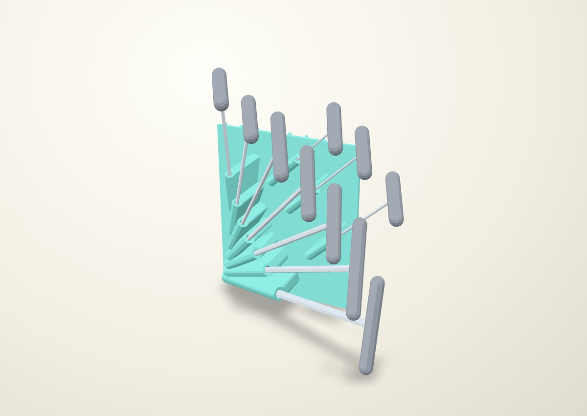
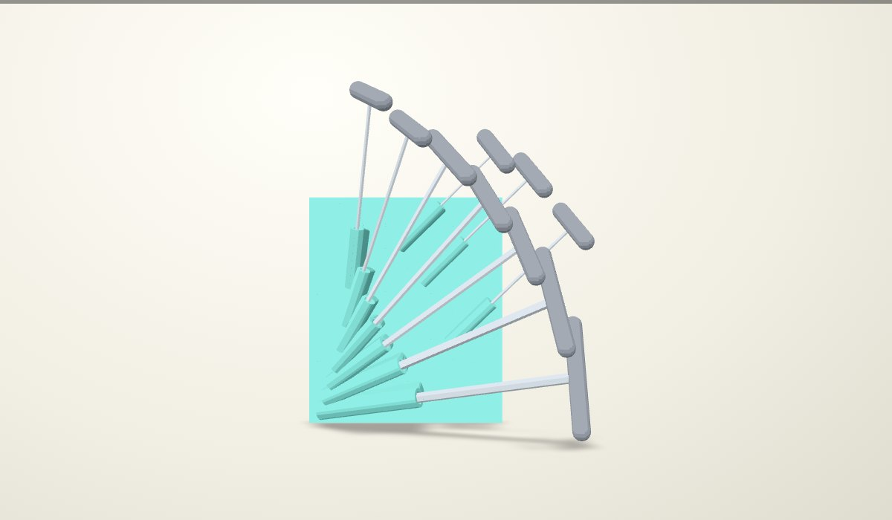
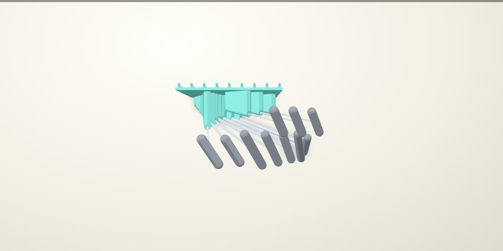
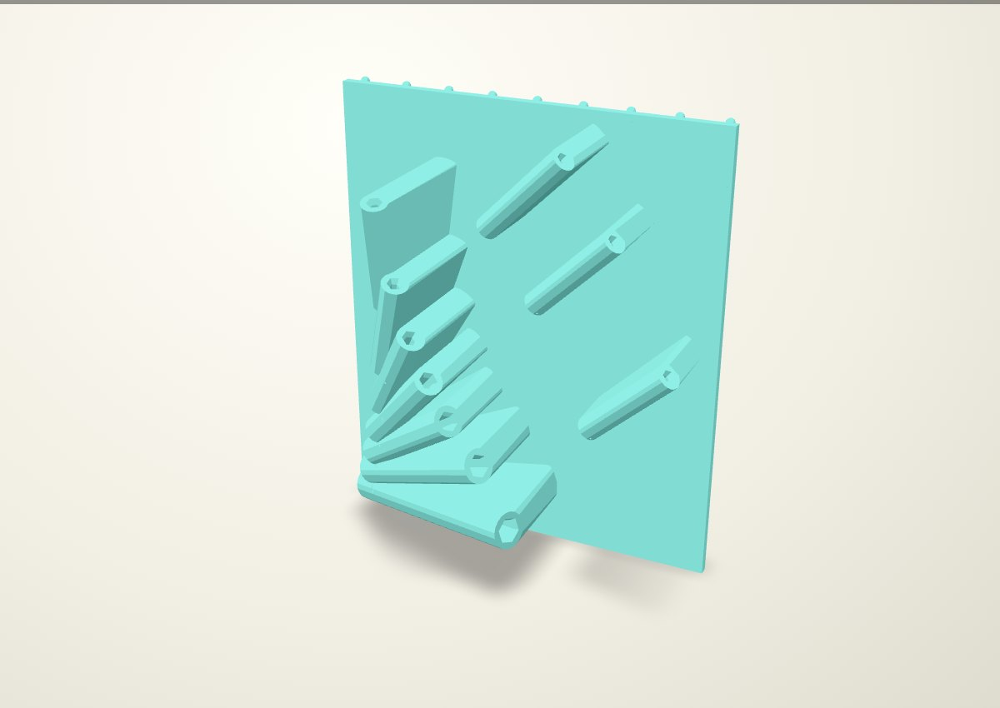
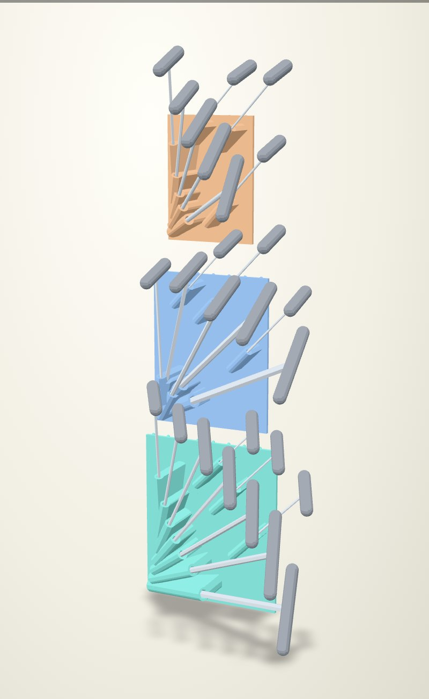

Green fan: longer sleeves, flatter handles
The selected Bondhus 13190 inch fan, with 50% longer straight sleeves and T-bars twisted 30° toward the pegboard plane. This is a new native-CAD review.

The handles follow the fan instead of being levelled horizontally. Hex-flat clocking follows each handle. The main fan opens another 0–15°, and the 1/8-inch key moves 18.1 mm sideways. This keeps the approved fan shape while adding the longer sleeves. The staggered shaft tips and tucked small-key arrangement remain.
Front and plan views


Longer straight engagement

Straight engagement increases from 40–76.2 mm to 60–114.3 mm. Each entrance retains the 3 mm axial lead-in opening 1.5 mm per flat, +0.38 mm total AF clearance, square stop and 1 mm vent. The C fit was physically selected only on the owner's 3 mm / 5 mm coupons; these inch sizes and longer guides need physical confirmation.
| Key | Previous | New |
|---|---|---|
| 3/32 | 40.0 | 60.0 |
| 7/64 | 40.0 | 60.0 |
| 1/8 | 40.0 | 60.0 |
| 9/64 | 40.0 | 60.0 |
| 5/32 | 40.0 | 60.0 |
| 3/16 | 40.0 | 60.0 |
| 7/32 | 44.4 | 66.7 |
| 1/4 | 50.8 | 76.2 |
| 5/16 | 63.5 | 95.2 |
| 3/8 | 76.2 | 114.3 |
Size and stack
The native holder is 216.0 × 97.7 × 252.9 mm (width × depth × height, including rear pegs and excluding tools). The selected previous green holder was 184.0 × 91.3 × 239.2 mm.
Only the green inch rack changes. The blue metric and orange Torx holders retain their geometry. The revised stack uses 254.0 mm (10 rows) from inch to metric, then 228.6 mm (9 rows) to Torx.

Checks and limits
All 26 stored-tool and axial socket-release checks pass for this stack. The green rack is checked for a two-finger pinch at the front end of each handle: two assumed 24 × 18 × 10 mm fingertip pads, spanning 38 mm across the 18 mm grip. All ten pinch approaches and axial-release sweeps clear the neighboring tools and native holders. Native bodies are valid single solids; stored tool/body overlap is zero. The green socket cavities remain separate.
Tools are catalogue envelopes with an assumed 18 mm grip diameter. Subsequent free-hand removal, whole-rack installation, printing, supports and physical loads remain unqualified. These are review renders, not qualified print files.